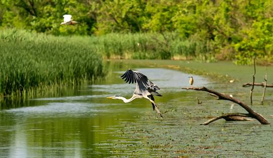

Vellode Bird Sanctuary
Vellode Birds Sanctuary is a bird sanctuary located in Erode District, Tamil Nadu, India.
The sanctuary covers an area of .77 km2 (0.30 sq mi).
The sanctuary is located near Vellode, about 12 km from Erode.
It has been designated as a protected Ramsar site since 2022.[1]